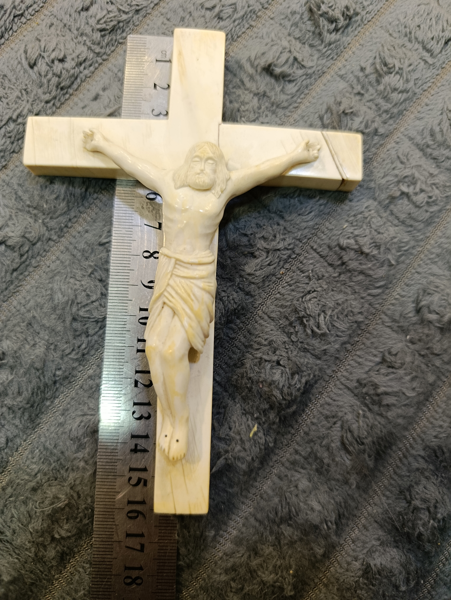
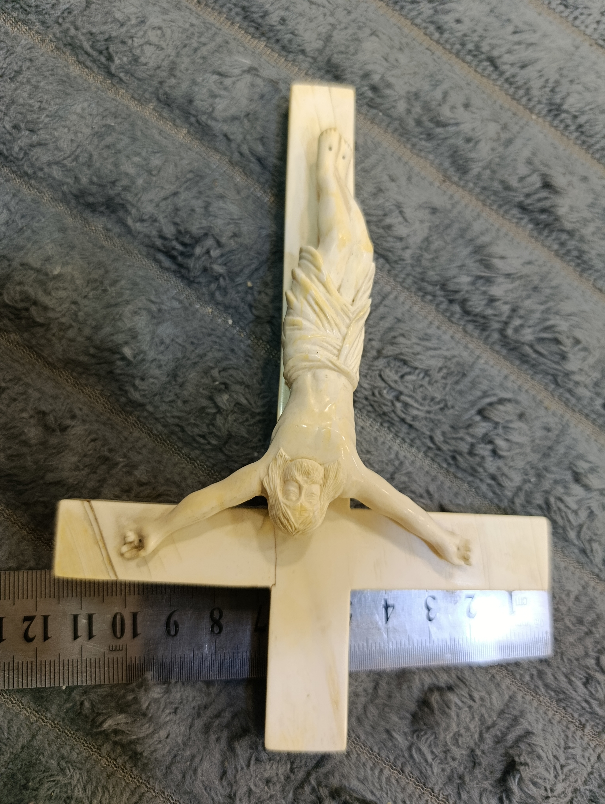
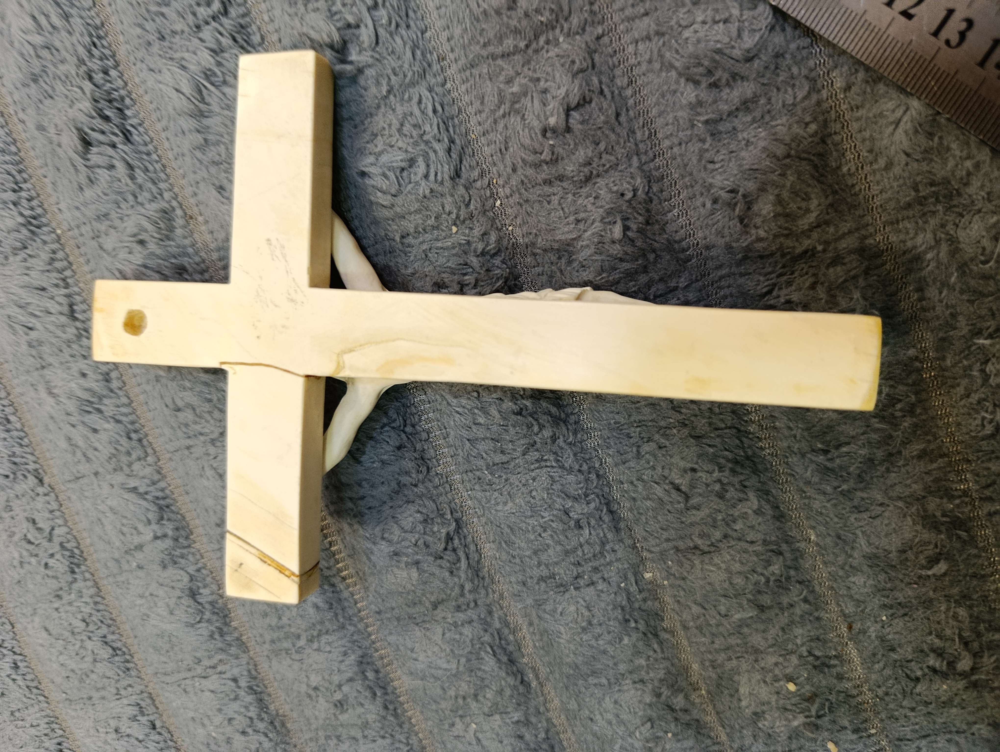
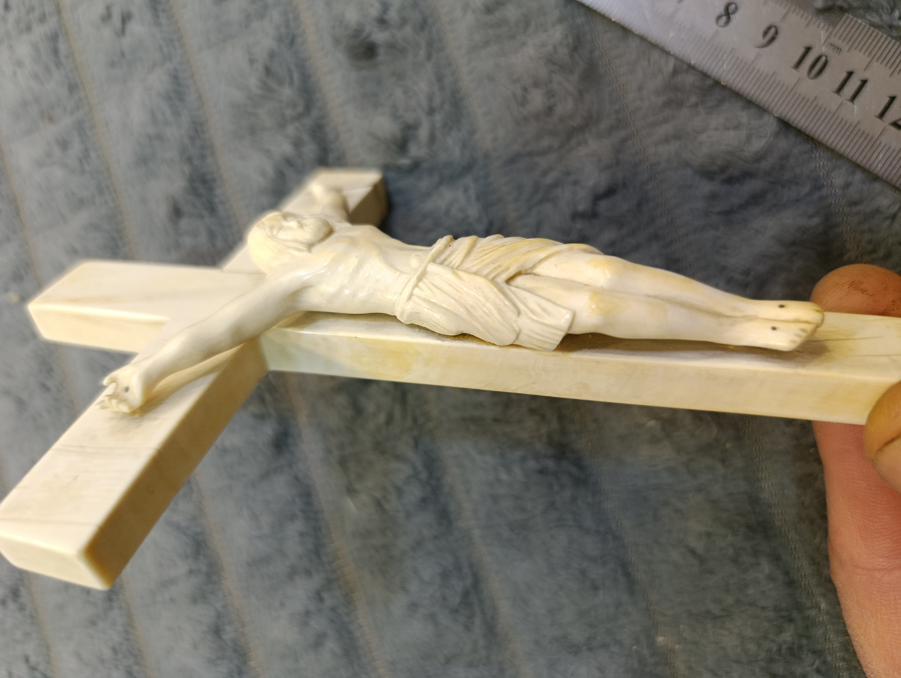
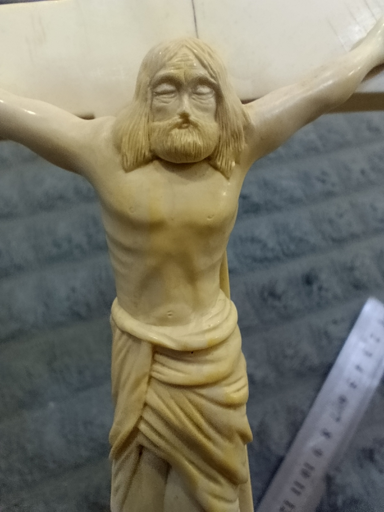
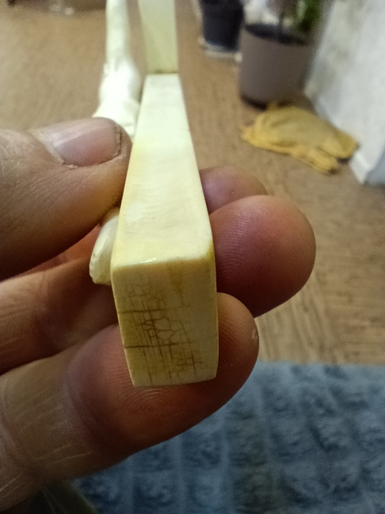
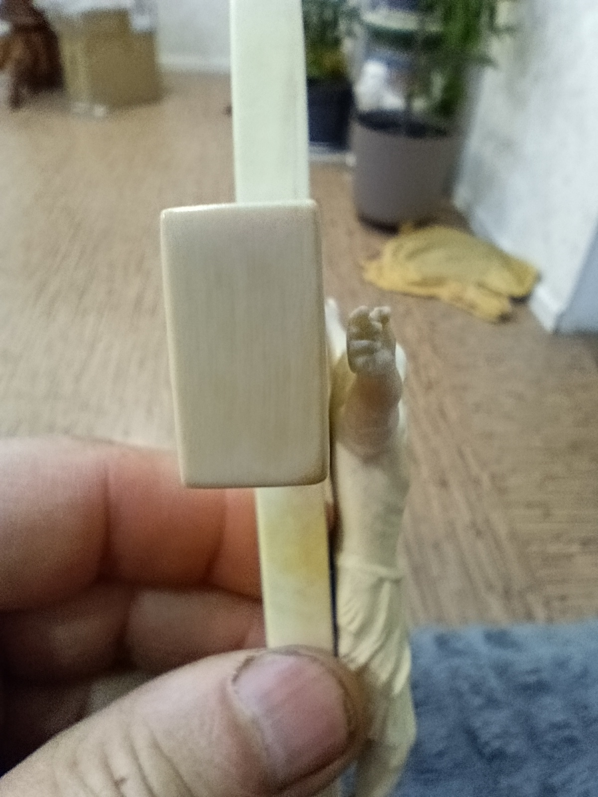
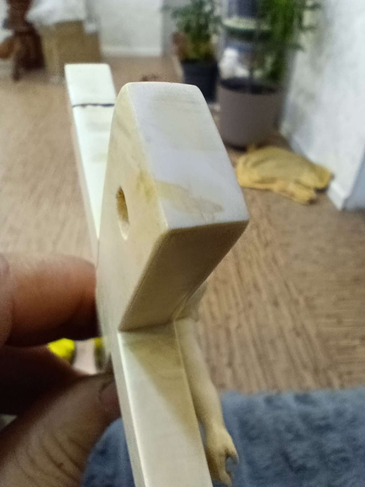

Objects with history. Pieces worth collecting.
Selected antique objects and unusual collectibles.

Hand-Carved Mammoth Ivory Crucifix – Jesus Christ
Available
Hand-carved crucifix made from natural mammoth tusk, featuring a detailed sculpted figure of Jesus Christ. Approximately 16–17 cm. Natural lines and age-related characteristics of the material are visible in the photographs.
$750





Vintage 925 Silver Brooch
Available
Unusual vintage collectible brooch. Sterling silver marked 925. Total weight approximately 24 g.
$200

